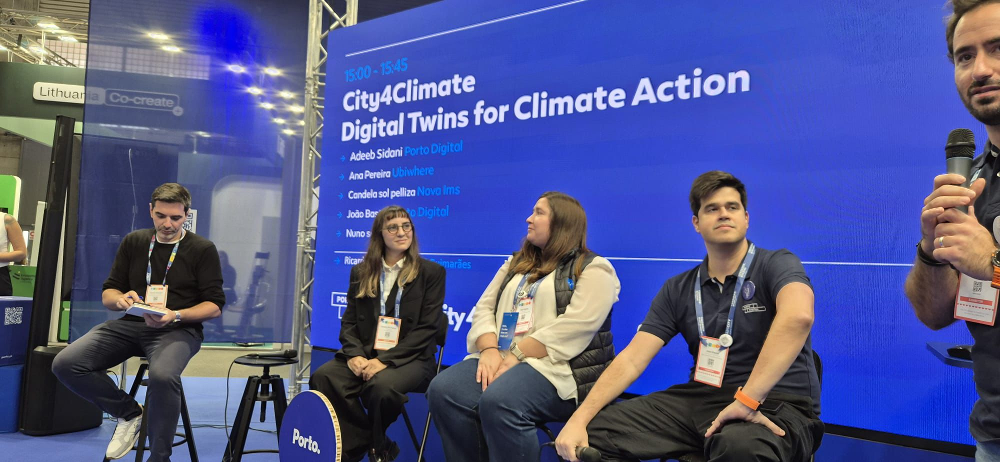

talks & press
Invited talks, conference presentations, panels and public events, media appearances, and interviews.
Invited Talks
2025
Roundtable: Social & Environmental Innovation in the Digital Era
Participant of the roundtable discussion about Social & Environmental Innovation in the Digital Era
- Roundtable
- Urban Innovation
Fig.
Plate
2026
Building the Future of Urban Intelligence with Digital Twins
Presenting the City4Climate project advancements
- Digital Twins
- Decarbonization
